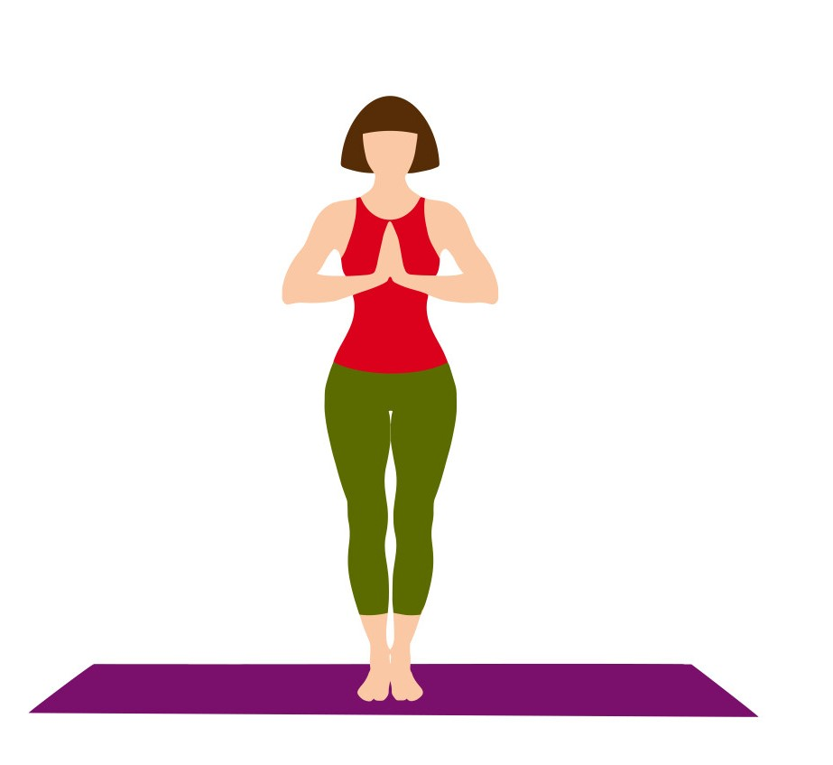
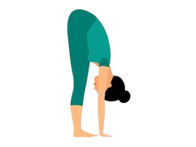
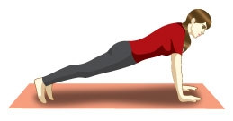
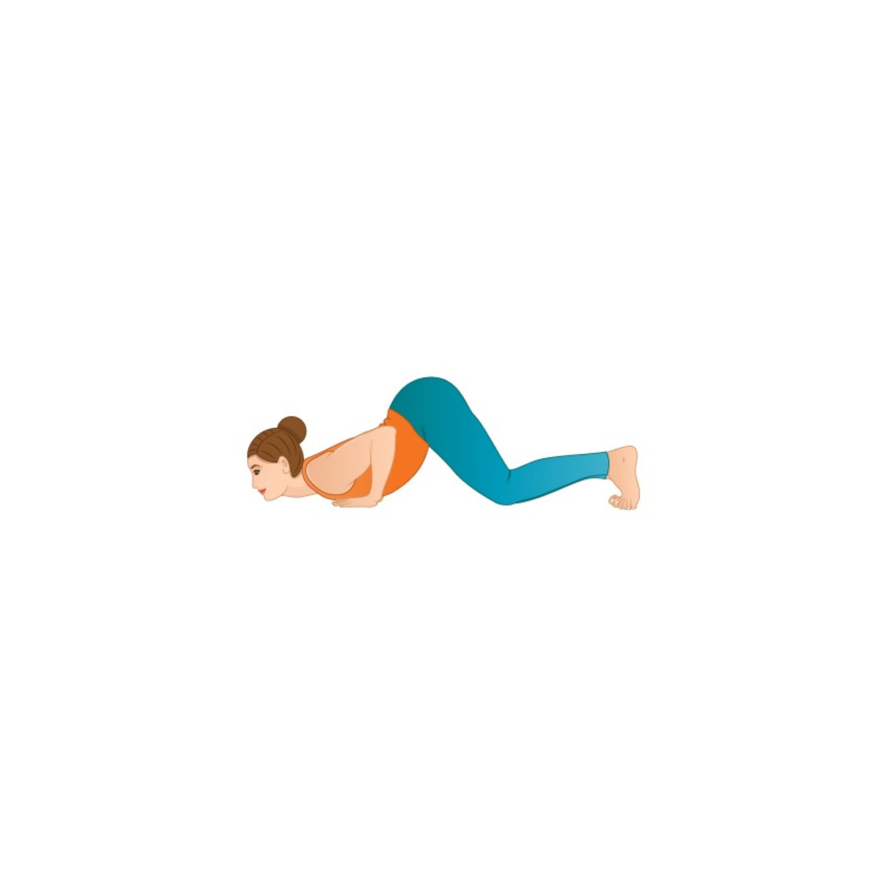
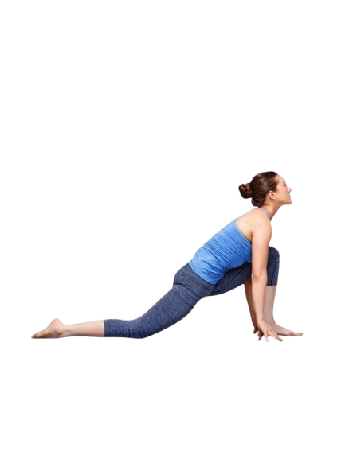

1. Pranamasana (Prayer Pose)
- Stand upright with feet together.
- Bring palms together in front of the chest.
- Relax your shoulders and focus on breathing.
Benefits:
- Calms the mind and reduces stress.
- Improves concentration and focus.
- Prepares the body for further poses.

2. Hasta Uttanasana(Raised Arms Pose)
- Raise your arms overhead and arch your back.
- Keep the palms facing each other.
- Breathe deeply and stretch the spine.
Benefits:
- Improves flexibility of the spine.
- Strengthens the shoulders and arms.
- Stretches the abdominal muscles.

3. Hasta Padasana (Hand to Foot Pose)
- Exhale and bend forward from your hips.
- Bring your hands down to the floor beside your feet.
- Try to touch the ground with your palms (bend your knees if needed).
Benefits:
- Stretches the spine and hamstrings.
- Improves flexibility of the hips.
- Tones the abdominal organs.

4. Ashwa Sanchalanasana (Equestrian Pose)
- Inhale, take your right leg back as far as possible, and drop your knee to the floor.
- Keep your left foot between your hands and look upwards.
Benefits:
- Strengthens the leg muscles.
- Improves flexibility of the hips and thighs.
- Opens the chest and increases lung capacity.

5. Dandasana (Stick Pose)
- Hold your breath and take the left leg back.
- Keep the body in a straight line from head to heels.
- Support your weight on your hands and toes.
Benefits:
- Strengthens the arms, shoulders, and core muscles.
- Improves body posture.
- Enhances endurance and stability.

6. Ashtanga Namaskara (Salute with Eight Parts Pose)
- Exhale and lower your knees, chest, and chin to the floor.
- Keep your hips slightly raised, and toes, knees, chest, hands, and chin should touch the ground (eight points of contact).
Benefits:
- Strengthens arms, chest, and legs.
- Improves flexibility of the spine.
- Enhances overall physical endurance.
.webp)
7. Bhujangasana (Cobra Pose)
- Inhale, slide forward, and raise your chest up.
- Keep your elbows bent and close to your body.
- Look upward and stretch the chest forward./li>
Benefits:
- Strengthens the spine.
- Opens up the chest and shoulders.
- Stimulates abdominal organs, improving digestion.

8. Adho Mukha Svanasana (Downward-Facing Dog Pose)
- Exhale and lift your hips, bringing your body into an inverted "V" shape.
- Keep your feet flat on the floor and hands shoulder-width apart.
Benefits:
- Stretches the hamstrings, calves, and shoulders.
- Strengthens the arms and legs.
- Relieves stress and calms the mind.

9. Ashwa Sanchalanasana (Equestrian Pose)
- Repeat Pose 4 on the opposite side.
- Inhale, step your right foot forward between your hands.
- Drop the left knee to the floor, stretch your back, and look upward.
Benefits:
- Enhances flexibility and strength in the lower body.
- Improves balance and coordination.
- Opens the hips and chest.
Hasta Padasana (Hand to Foot Pose)
- Repeat Pose 3.
- Exhale and bring your left foot forward.
- Try to touch the floor with your palms.
Benefits:
- Increases flexibility in the spine and legs.
- Tones the abdominal muscles.
- Relieves tension in the neck and shoulders.
Hasta Uttanasana (Raised Arms Pose)
- Repeat Pose 2.
- Inhale, lift your arms, and stretch backward.
Benefits:
- Strengthens the spine and shoulders.
- Stretches the abdominal muscles.
- Increases lung capacity and improves digestion.
Pranamasana (Prayer Pose)
- Repeat Pose 1.
- Exhale and bring your palms together in front of your chest in a prayer position.
Benefits:
- Helps stabilize your breathing and bring balance to the body.
- Promotes mental relaxation and focus.